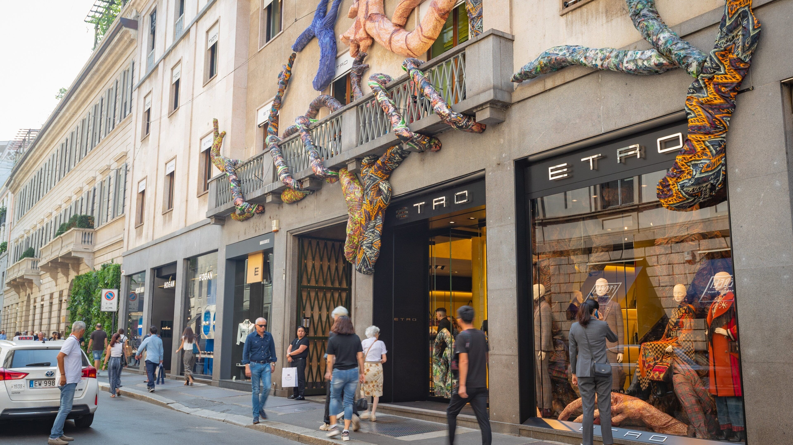

每天預設三段
18:00 aperitivo
Spritz 或氣泡水＋小食。米蘭 Navigli／金四角、威尼斯 Cannaregio、佛羅倫斯 Santo Spirito、羅馬 Trastevere。
16-DAY DOSSIER · 2027.02.06 · CET 冬天時區

2027.02.06 出發 · 放棄嘉年華 · 最後才米蘭購物 · 華航進／長榮出
開腳：2/6 華航飛羅馬（你查商務 121,636）、2/21 長榮從米蘭飛回（約 1,940 €）。由南往北：羅馬（含天空之城、龐貝當日來回）→佛羅倫斯 3 晚→威尼斯→最後三晚米蘭逛街。Serravalle 袋子隔天托運，不用拖兩週。
去程 2/6 TPE→FCO（先確認週六華航直飛）。回程 2/21 BR96 MXP 約 11:00→TPE 次日清晨，每天有。CET＝台灣 −7。
答案：冬天城市，購物放最後。不是嘉年華。羅馬多兩天給天空之城與龐貝；佛羅倫斯不再硬湊錫耶納。米蘭金四角與 Serravalle 放回家前兩天。
J 人交通裁決
各城有 ZTL，威尼斯沒車，全程不租自駕車。城際仍坐 Freccia。六人加大箱、或距離不遠卻要轉兩次的路，改包 van／水上計程車，不差那一點錢。
點開每一天看景點照片、時刻、租車裁決、飯店抵達。白天館約 16:30–18:00 關；晚上 18:00–21:30 夜走。D1 桃園夜航，地面 14 晚。購物在最後三晚米蘭。
機票：華航 2/6 去羅馬商務 ＋ 長榮 2/21 米蘭回商務。先確認 2/6 週六是直飛。住宿現在訂羅馬 2/7–12（5 晚）、佛羅倫斯 2/12–15（3 晚）、威尼斯 2/15–18、米蘭 2/18–21。梵蒂岡鎖定 2/8 週一。龐貝訂 2/11。《最後的晚餐》放票日當天搶，搶不到立刻改含票導覽。
人數 4 大 2 小。六人開三間雙人房通常比 包棟／整套公寓 貴一截，還不能自己做早餐。超豪 palazzo 三間總統套房不要看，那是另一個預算。
按鈕會用你們的入住日、4 成人 2 小孩打開 Booking 整套房或 Airbnb。 羅馬住 metro A／Termini，連住 5 晚。米蘭最後三晚住杜奧莫，2/21 07:00 van 樓下接去 MXP。
冬天老公寓三件硬傷，訂之前問房東：熱水是瞬熱還是 50–80L 儲水桶（六人連洗會冷）、暖氣每天開幾小時、限溫約 19–20°C（問有沒有備援暖氣機與厚毯）、電梯尺寸與是否先走半層。威尼斯還要問最近碼頭。
參考價為 2026-08 冬季／嘉年華行情（整套／晚，含典型清潔費攤提）。匯率 EUR 1＝NT$36。小孩假設 6–15 歲。
二月日落約 17:30–17:45。烏菲茲、梵蒂岡、競技場這時候關，所以白天表會停在下午——那是室內行程結束，不是一天結束。義大利城裡晚上才開始：燈光、spritz、19:30 開廚。家庭預設 21:00–21:30 回公寓，不是 16:30。2/10、2/11 當日來回提早睡。
每天預設三段
Spritz 或氣泡水＋小食。米蘭 Navigli／金四角、威尼斯 Cannaregio、佛羅倫斯 Santo Spirito、羅馬 Trastevere。
19:30–21:00
18:00 去會撞上觀光套餐。六人要訂位，尤其情人節。小孩吃完可以走，大人不必再續攤。
21:00–21:30
米蘭杜奧莫夜燈、威尼斯河岸、佛羅倫斯舊橋、羅馬競技場外牆／特雷維。免費。隔天有 8 點館，不要再加第二個夜區。
晚上不要排
這些會關。夜店、€800 舞會、22:00 才開的餐廳，帶兩個小孩不排。瑞士那趟晚上也短，是因為纜車末班與冰，跟義大利城不一樣。
大買放最後：2/19 金四角進店、2/20 Serravalle，2/21 托運。前面羅馬／佛羅倫斯只買小的、吃的、工坊小件。
2/9 羅馬
2/10 天空之城、2/11 龐貝，這兩天不逛街。旗艦櫥窗留米蘭。
2/13 佛羅倫斯
皮件、紙品、金工。小件可以買，大袋不要。San Lorenzo 攤不要排。
2/16 威尼斯
嘉年華已過。面具工坊可以進。仍不要大包。
2/18 傍晚米蘭
轉場日只看窗、記店。
2/19 米蘭
最後的晚餐＋屋頂之後進店。平價走 Corso Buenos Aires。
2/20 週六
週六人多，但袋子隔天托運。接駁 9:00，回程寫死。現場退稅。
四大兩小、換 4 次住宿。前面只拖衣服箱；Serravalle 放最後一天，隔天托運，不用扛著逛威尼斯。
先減箱
大人共 3–4 顆中大型箱＋每人一個背包。小孩只背小包。威尼斯石橋＋階梯，四輪硬殼比兩輪軟箱更難抬。
最痛的兩天
這兩天大箱改水上計程車，不要擠 vaporetto。訂房硬條件：最近碼頭步行 5 分、盡量有電梯且不要先走半層。Outlet 袋還沒買，這兩天只搬衣服箱。
火車行李架
Standard 車廂兩端有行李區。六人對號盡量同一車。不要指望列車員搬。羅馬 Termini 出站叫計程車去公寓，不要石板路拖 25 分。
Outlet 翌日早飛
Serravalle 做市區退稅。2/21 MXP 海關 Otello 還要感應，否則款會被扣回。只拖箱子上車。
| 日 | 路段 | 大箱怎麼辦 |
|---|---|---|
| 2/7 | FCO → 羅馬公寓 | Leonardo Express 到 Termini，出站叫車。 |
| 2/10 | 天空之城當日來回 | 大箱留羅馬。van 樓下接。只帶背包＋防滑靴。 |
| 2/11 | 龐貝／拿坡里當日來回 | 大箱留羅馬。Freccia 對號，拿坡里出站叫車去遺址。 |
| 2/12 | 羅馬 → 佛羅倫斯 | 跟人走 Freccia。SMN 出站短程計程車。 |
| 2/15 | 佛羅倫斯 → 威尼斯 | 跟人上車。S. Lucia 出站改水上計程車。 |
| 2/18 | 威尼斯 → 米蘭 | 水上計程車去車站，Freccia 到 Centrale，再計程車去杜奧莫。 |
| 2/20 | Serravalle | 大箱留公寓。袋當晚塞進託運。 |
| 2/21 | 杜奧莫 → MXP T1 | 07:00 van 樓下。先 Otello 退稅再報到。袋已在託運箱。 |
義大利段沒有瑞士 SBB 行李寄送。真的搬不動再找 Carryon／Luggage Forward 這類私人服務，出發前核對取件日——短住不要寄「後天到」。
以 4 成人＋2 小孩 計算。商務開腳用你查的價：去程羅馬 121,636＋回程米蘭約 1,940 €。不含 Outlet 購物。
| 類 | 項目 | 普通 | 全部最高等 |
|---|
這不是報價單。機票以長榮官網為準；房價以你點進 Booking 當下為準。嘉年華威尼斯與春節機票波動可以到 ±30%。
勾選會存在這台瀏覽器（與瑞士頁分開）。沒勾完就不要出門。
景點圖為真實攝影，不是 AI。多數來自 Wikimedia Commons；Via Montenapoleone 為你指定的街道實拍。完整出處見下方。